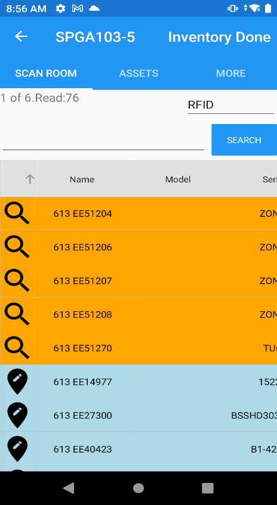

📱 Batch Mode Scanning Guide
Batch Mode Scanning lets you perform full inventory of asset locations without an active internet connection. Sync the database to your device before going offline, scan all locations on-site, then sync your results back to the server when you return.
ⓘ Equipment Required
This guide assumes you are using a Zebra TC53 mobile computer with the associated Zebra Sled (RFID reader attachment). The AssetWorx! mobile app must already be installed.
This guide assumes you are using a Zebra TC53 mobile computer with the associated Zebra Sled (RFID reader attachment). The AssetWorx! mobile app must already be installed.
Contents
Step 1 — Connect & Open AssetWorx!
1
Take the TC53 and Sled to the Scanning PC.
The scanner will automatically connect to the PC MiFi hotspot. Wait for the Wi-Fi indicator before opening the app.
The scanner will automatically connect to the PC MiFi hotspot. Wait for the Wi-Fi indicator before opening the app.
2
Open the AssetWorx! app on the TC53 by tapping its icon on the home screen.

Step 2 — Sync with the Master Database
1
When prompted, select Yes to sync with the master database.
This downloads your complete location and asset inventory from the server so you can work offline.
This downloads your complete location and asset inventory from the server so you can work offline.


⚠ Not prompted to sync?
Navigate to More → Sync App manually before leaving. It is critical to sync before you go out and immediately after you return.
Navigate to More → Sync App manually before leaving. It is critical to sync before you go out and immediately after you return.
Step 3 — Log In
1
Enter your username and password when prompted, then tap Login.
The app will complete its sync and take you to the Scan Room screen.
The app will complete its sync and take you to the Scan Room screen.

Step 4 — Scan a Location Tag
1
Squeeze the bottom trigger on the Zebra Sled and aim at the location barcode label (e.g., the room tag on the door frame).
The app will load all assets assigned to that location.
The app will load all assets assigned to that location.

ⓘ Bottom trigger = Barcode mode. Always use the bottom trigger for location tags — location labels are standard barcodes, not RFID.
Step 5 — Scan Room Assets
1
Squeeze the top trigger on the Zebra Sled and sweep the reader near all assets in the room. You will hear a beep each time an RFID label is detected.
2
Continue sweeping the entire space. RFID reads happen automatically when a tag enters range — no precise aiming required.
✅ Prefer barcodes? Use the bottom trigger to scan each asset label barcode individually instead. Both methods work equally well.
Step 6 — Asset Color Codes
After scanning, every asset on screen is color-coded to show its status:
| Color | Meaning | What To Do |
|---|---|---|
| ■ Green | Expected in this location and found during scanning. | Nothing — inventory confirmed. |
| ■ Orange | Expected in this location but not yet found. | Keep looking, or ignore if known to be elsewhere. |
| ■ Blue | Found here but not assigned to this location. | Tap the asset to move it here or ignore. |
| ■ Pink | Not your assets — shipping labels, vendor tags, or other RFID items. | Ignore. Do not take action. |


ⓘ Tip: Tap the arrow icon in the column header to change sort order. Scroll up to bring Green and Blue (scanned) assets to the top.

Step 7 — Handle Unexpected (Blue) Assets
Blue assets are physically present but assigned to a different location. Tap the asset to choose an action:

| Action | What It Does |
|---|---|
| Move from SP-XXXX | Moves only the selected blue asset to the current location. |
| Move All Unexpected | Reassigns all blue assets to the currently scanned location at once. |
| Ignore | No change — asset stays assigned to its original location. |
| Locate | Records the asset’s position without changing its assigned location. Available for any color. |
| Edit | Opens the asset record for manual edits. |
| Maintenance Histories | View past maintenance records for the asset. |
Step 8 — Finish the Location
1
Tap Inventory Done in the upper-right corner when finished scanning the current location.

✅ INVENTORY DONE = Save.
This saves all scan results for the current location and resets the Scan Room screen so you can begin the next one immediately. Do not skip this step.
This saves all scan results for the current location and resets the Scan Room screen so you can begin the next one immediately. Do not skip this step.
Step 9 — Continue to the Next Location
1
From Scan Room Home, squeeze the bottom trigger and scan the barcode label for the next room.
2
Repeat Steps 4–8 for each location you need to inventory.
ⓘ No network required between locations. All scan data is stored locally on the TC53. You can inventory as many locations as needed before returning to the PC.
Step 10 — Sync When Done
1
When all locations are done, return to the Print Cart PC.
2
In the app tap More (top tab), then tap Sync App.

3
Wait for the sync to complete. Your scan data is uploaded and merged with the master database.
⚠ Sync immediately after returning.
Until you sync, your inventory data exists only on the device. If the device loses power or the app is force-closed before syncing, unsaved data may be lost.
Until you sync, your inventory data exists only on the device. If the device loses power or the app is force-closed before syncing, unsaved data may be lost.
✅ Ready for ENNX?
Once synced, you can generate your ENNX reconciliation report in iDash. See ENNX Report Documentation for instructions.
Once synced, you can generate your ENNX reconciliation report in iDash. See ENNX Report Documentation for instructions.
⚙ Quick Reference Card
| Task | How |
|---|---|
| Sync before going offline | App prompt → Yes | or: More → Sync App |
| Scan a location tag | Bottom trigger (barcode mode) |
| Scan RFID asset labels | Top trigger (RFID mode) — sweep near assets |
| Scan asset barcodes instead | Bottom trigger on each individual label |
| Move a blue asset to current location | Tap the asset → select action |
| Save & move to next location | Tap Inventory Done (upper right) |
| Sync results back to server | More → Sync App |
| Generate ENNX report | After sync — see ENNX Documentation |
← Back to Documentation Hub